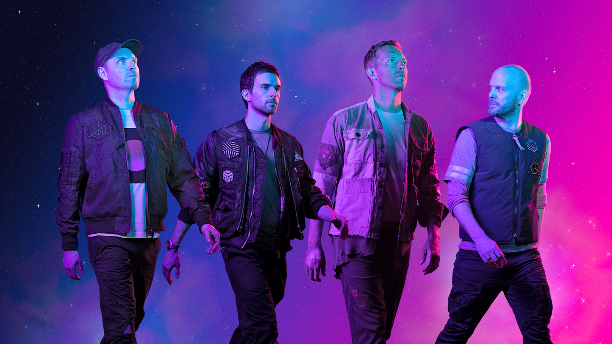
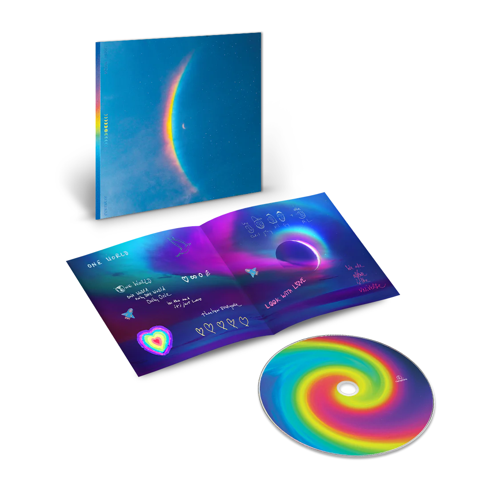

Introduction
Elysium is a band that blends R&B with elements of electronic and indie music, creating a unique, soulful, and emotional sound. With melancholic melodies and introspective lyrics, Elysium tells stories about the complex emotions of humanity, such as loneliness, longing, and self-discovery.
The band members, with their exceptional songwriting and production talents, have created hit songs that leave a strong impression on listeners, drawing them into the captivating musical world of Elysium.
Featured Album
Discover our latest album and immerse yourself in the music.
Listen NowVynil Albums